Landtechnik-News
Massey Ferguson zeigt im Oktober in Beauvais einen rosa Traktor
Massey Ferguson zeigt im Oktober in Beauvais einen einzigartigen rosa Traktor. Ein Sondermodell, das ungewöhnlicher kaum sein könnte.
Quelle: top agrar · 27.09. 20:00
Enthält Werbelinks (mit * markiert)
Massey Ferguson zeigt im Oktober in Beauvais einen einzigartigen rosa Traktor. Ein Sondermodell, das ungewöhnlicher kaum sein könnte.
Quelle: top agrar · 27.09. 20:00

GIANTS gibt einen Vorgeschmack auf den Kaffeeanbau in der Map Catuaí | Beans & Alpacas. Eine neue Kultur auf einer neuen Map.
Quelle: GIANTS Software · 24. September 2026
* Partnerlink: Kaufst du darüber Spiel oder DLC, erhalte ich eine Provision. Für dich ohne Mehrkosten.

Stihl stellt seinen ersten Akku-Fällkeil vor. Damit lassen sich Bäume aus sicherer Entfernung fällen, ohne direkt am Stamm zu stehen.
Quelle: bauernzeitung.de · 27.09. 21:44

Thomas Mösl gründete 2015 die Firma MSW GmbH. Sein Hydraulik-Schnellkuppler heißt heute Highspeed Oil Coupler. Ein Rückblick auf die Entwicklung seit 2014.
Quelle: LANDWIRT · 28.09. 07:00

Der Landtechnikhändler Vonier feiert 75 Jahre Firmengeschichte und eröffnet zum Jubiläum eine neue Werkhalle.
Quelle: dieBildschirmzeitung · 27.09. 08:37

Sandro Amrhein ist Weltmeister. Die Schweizer Fachzeitschrift agrartechnik.ch meldet den Titel.
Quelle: agrartechnik.ch · 28.09. 05:47
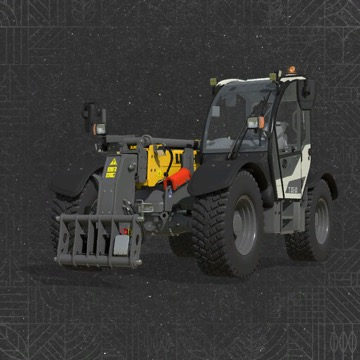
Loaders - Telehandlers · von SBE-Kai
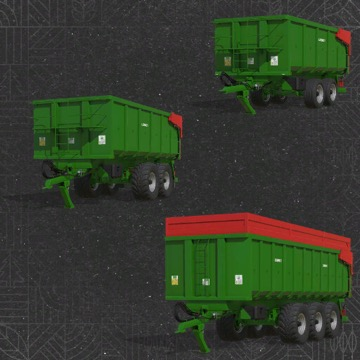
Trailers - Trailers · von CALERUEGA modding design
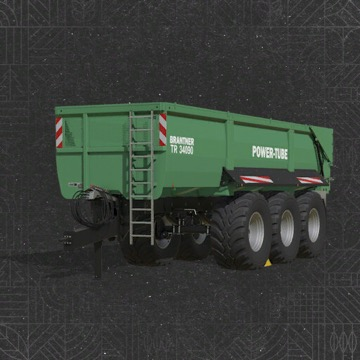
Trailers - Trailers · von Jirka.T
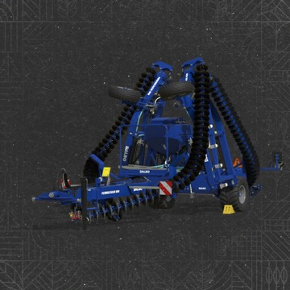
Soil Cultivation - Disc Harrows · von Rentner Modding
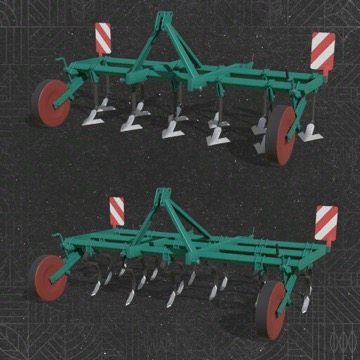
Soil Cultivation - Cultivators · von PanSimono, Dymitri
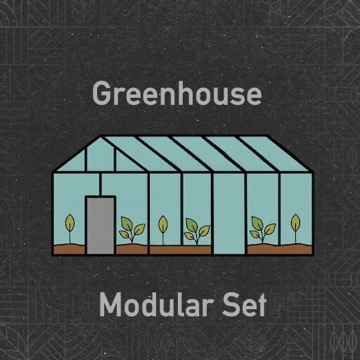
Package · von Kastor [D-S-Agrarservice]
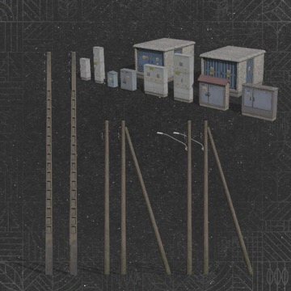
Placeable - Fences · von MA7Studio
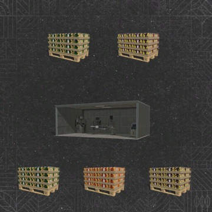
Placeable - Production Sites · von morfei1
* Partnerlink: Kaufst du darüber Spiel oder DLC, erhalte ich eine Provision. Für dich ohne Mehrkosten.
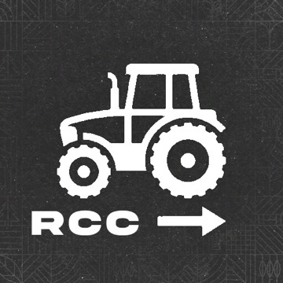
Gameplay · von lokras1234
Prefab · Other · von Angelo_smet
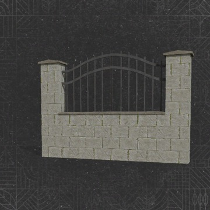
Prefab · Fence · von MixFarming
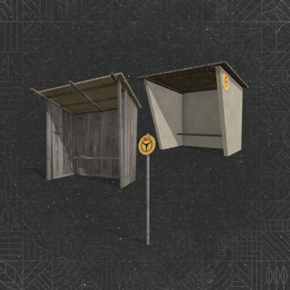
Prefab · Building · von PL studio
* Partnerlink: Kaufst du darüber Spiel oder DLC, erhalte ich eine Provision. Für dich ohne Mehrkosten.
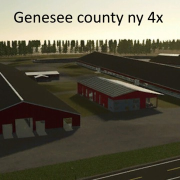
North American Maps · von jdunn1019
Version 1.0.0.4
Neue Patches 1.20 und 1.21 eingebaut, Feld 38 und eine Biogasanlage für überschüssige Gülle ergänzt, Wiesengras-Schnitt und mehrere Kleinigkeiten repariert; ein neuer Spielstand ist nötig.
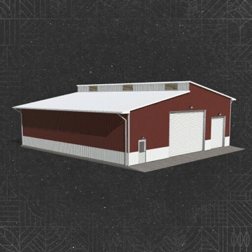
Placeable - Sheds · von ikas, Kristo
Version 1.0.0.1
Kollisionsfehler am Boden behoben.
Placeable - Fences · von MixFarming
Version 2.0.0.0
Eine weitere Zaunvariante ist dazugekommen.
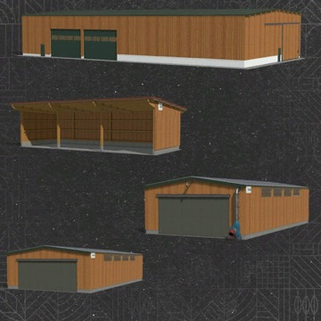
Placeable - Sheds · von MISSYB
Version 1.1.0.0
Probleme beim Erscheinen der Objekte behoben.
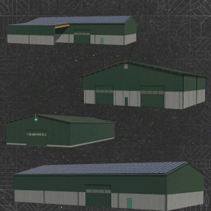
Package · von MISSYB
Version 2.0.0.0
Info-Trigger und Türprobleme repariert, der überdachte Bunker ist wieder da.
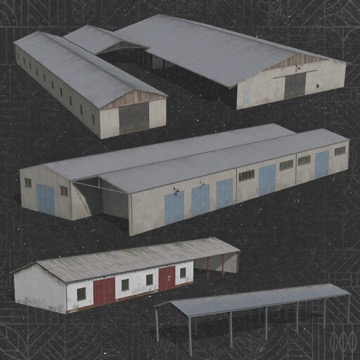
Placeable - Storages · von MrHector
Version 1.2.1.0
Unterstützung für die Stackable-Pallet-Storage-Erweiterung, Objekt-Trigger sitzt wieder korrekt an der bequemeren Gebäudeseite.
* Partnerlink: Kaufst du darüber Spiel oder DLC, erhalte ich eine Provision. Für dich ohne Mehrkosten.
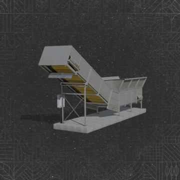
Placeable - Grain silos · von Kastor [D-S-Agrarservice]
Version 1.0.0.1
Umrechnung von Gras und Heu in den Bunkern repariert, Entladen mit der Schaufel von der Seite funktioniert wieder.
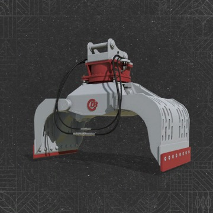
Forestry - Excavator Tools · von Angelo_smet
Version 1.0.0.2
Wackeliger Drehpunkt behoben, Wassersprühsystem und Schnellkuppler ergänzt, Greifen von Ballen und Texturen verbessert.
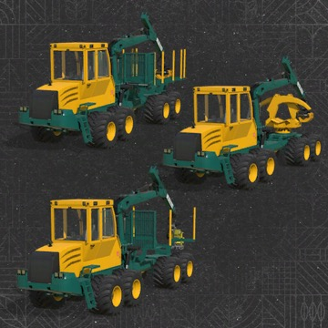
Forestry - Forwarders · von Carl-TG
Version 1.0.7.1
Einige Raupenketten, die in die Maschine ragten, sind repariert.
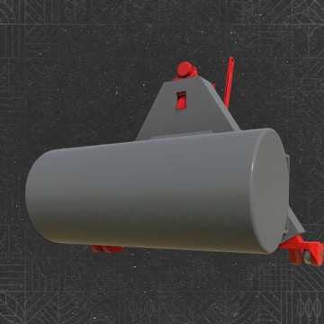
Miscellaneous - Weights · von Saargau Modding
Version 1.0.1.0
Farbauswahl ergänzt, ModDesc-Version aktualisiert, Schmutzdarstellung hinzugefügt.
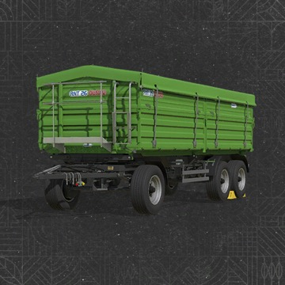
Trailers - Trailers · von EED123
Version 1.0.1.0
Fahrwerk-Physik und Achsenanimation verbessert, Bremsgeräusche ergänzt.
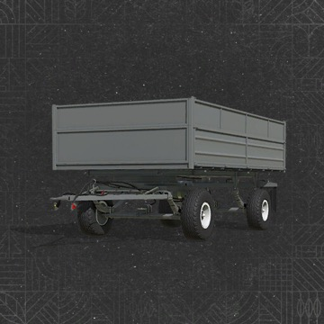
Trailers - Trailers · von EED123
Version 1.0.1.0
Anhänger-Physik und Achsen verbessert, Bremsgeräusche ergänzt.
* Partnerlink: Kaufst du darüber Spiel oder DLC, erhalte ich eine Provision. Für dich ohne Mehrkosten.
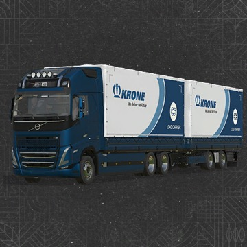
Drivables - Trucks · von ALXXA
Version 1.0.0.4
Neue Animationen für Türen und Spoiler sowie neue Farbschemata.
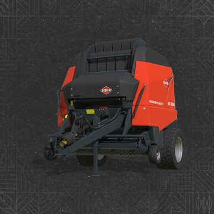
Baling - Round Balers · von Puszkap
Version 1.0.0.1
Fehlendes Kabel am Elektroanschluss ergänzt, neue Mod- und Store-Icons.
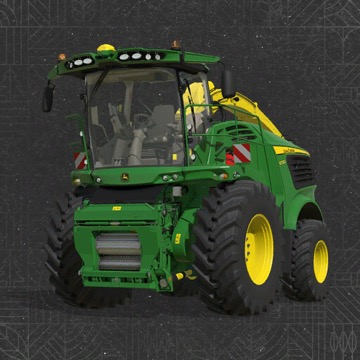
Forage Harvesting - Harvesters · von SL_Modding
Version 1.2.0.1
Seitenklappen sind beim Öffnen jetzt sichtbar, kleinere Fehler behoben.
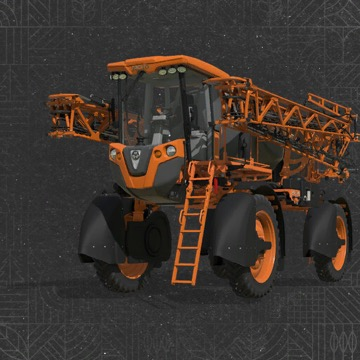
Yield Improvements - Sprayers · von Jacto and Connect Modding LTDA
Version 1.0.0.2
Problem mit dem Precision-Farming-DLC behoben.
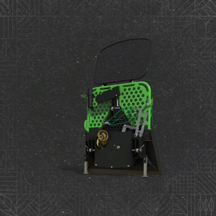
Forestry - Winches · von WOLFex Modding
Version 1.0.0.1
Seildarstellung der Winde repariert.
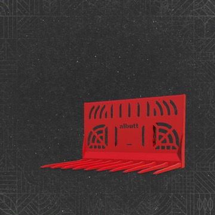
Loaders - Wheel Loader Tools · von Adub Modding ABP Team
Version 1.2.0.0
Französische Übersetzung und Kapazitäts-Konfigurationen ergänzt.
* Partnerlink: Kaufst du darüber Spiel oder DLC, erhalte ich eine Provision. Für dich ohne Mehrkosten.
Gameplay · von Helfer B.
Version 1.3.0.0
Sortierung zeigt nur noch fahrbare Fahrzeuge, neue Knöpfe zum Nach-oben/Nach-unten-Schieben und Speicherfehler auf Dedicated Servern behoben.
Gameplay · von Plutogaming91
Version 1.0.2.0
Einstellungen ins normale Spielmenü verschoben, Anzeige und Umschaltung der Schnittlänge auf F1 ergänzt, automatisches Entasten schneller.
Gameplay · von JulLeBarge
Version 1.0.1.0
Einstellungen werden jetzt im Spielstand gespeichert und bleiben nach dem Neuladen erhalten.
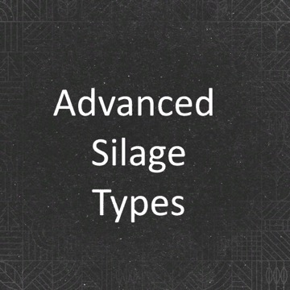
Gameplay · von ModdingAssociation - Tidde
Version 1.4.0.0
Bunkersilo-Logik überarbeitet, die Pumps-and-Hoses-Biogasanlage wird unterstützt.
Gameplay · von AgrarKadabra
Version 1.1.0.2
Konflikt mit Easy Development Controls behoben, der Super-Kraft auf Dedicated Servern für alle Spieler aktivieren konnte; spanische Übersetzung ergänzt.
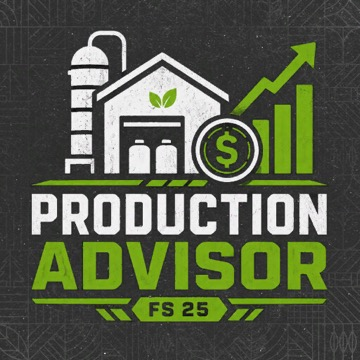
Gameplay · von NYKK3
Version 1.0.0.1
Suchfelder für Produkte und Ackerflächen ergänzt, Anzeige für Ultrawide-Monitore angepasst, Ladezeiten der Aufgabenliste optimiert.
* Partnerlink: Kaufst du darüber Spiel oder DLC, erhalte ich eine Provision. Für dich ohne Mehrkosten.
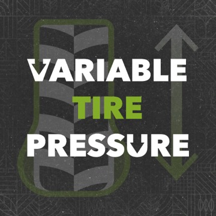
Gameplay · von HotShotPepper
Version 1.0.0.13
Fahrzeuge aus Mods ohne XML-Eintrag werden erkannt, gespeicherte Druckwerte werden beim Servereintritt richtig geladen, HUD verschiebbar und skalierbar.
Gameplay · von EWW_Bobo
Version 1.0.0.2
Kompatibilität mit dem TestRunner verbessert; die Anzeige verschwindet jetzt zusammen mit dem Standard-HUD.
Gameplay · von VertexDezign
Version 1.1.1.0
Geparkte Fahrzeuge lassen sich per Strg+Umschalt+Tab durchschalten, das Park-Symbol ist verschiebbar, und der Parkstatus hängt an der Spieler-ID statt am Namen.
* Partnerlink: Kaufst du darüber Spiel oder DLC, erhalte ich eine Provision. Für dich ohne Mehrkosten.

* Werbelink (Readly): Meldest du dich über den Link an, erhalte ich eine Provision. Für dich ohne Mehrkosten.
* Partnerlink: Kaufst du darüber Spiel oder DLC, erhalte ich eine Provision. Für dich ohne Mehrkosten.